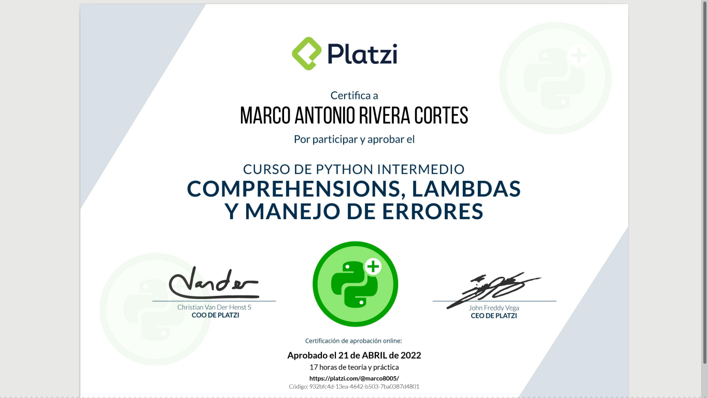
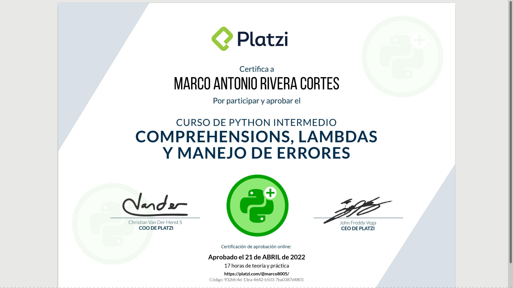

Biography

I studied engineering in geophysics and it gave me the satisfaction to understand the processes that the earth happens.
During the time I was studying my career, I returned to use a programming language to do some calculations like seismic waves speed, holes records, climatology and meteorology data, electrics’ methods, gravimetrics data, cleaning data, analyzing and interpreting data.
Fortran, Linux and gnuPlot were the better tools by our goals.
My job experience in geophysics, I had the opportunity to be in CGG as an intern in June 2017, where I worked with them for 8 months. This was fascinating because in my opinion CGG was better in its processing seismic data. As we know that the energy crisis affects the world, CGG decided to stop the services in Mexico.
CGG taught me the importance of working in a team, sharing all the knowledge about geosciences that represents the philosophy of passion and mission. I did marine seismic processing data, interpretation of horizons and interpretation of salt, etc.
I participated in two projects, one of them was in CENAPRED (Centro Nacional de Prevención de Desastres) in september 2015 to december 2015. I did seismic processing and filters about Mexico city data among other activities.
The second project was an electrical survey to explore water on Ixmiquilpan Hidalgo, it was realized by IPN (Instituto Politécnico Nacional) in august 2015. We induced electrical energy to measure underground resistivity to determine what a kind of rock we found and whether it contains water or not.
I did a course about synthetic model AVO’s method using the programming language Fortran and gnuPlot.
My last job was in the company Nielsen in march-2021 to march-2022. Insight Nielsen I did other things totally diferente that I did as an engineer of geophysics but I used my knowledge of analyzing data. As a data analyst I did filters, dynamics tables, data crossing, verifying barcodes and its descriptions of the products. classifying all the products with Nielsen’s codes, etc. I learned another way to see how the base data works evenly it gives a new reason to learn data science.
ConclusionsEverything that I have learned since my university education, professional form and as a teacher, made me notice that I love to teach and share knowledge. It’s a great pleasure to feel it, but no stop learning is the principal motivation to follow with the sciences, programming and teaching.
For that reason I decided to upgrade with some language programming courses to have more tools and I don’t stop my growth.


 
